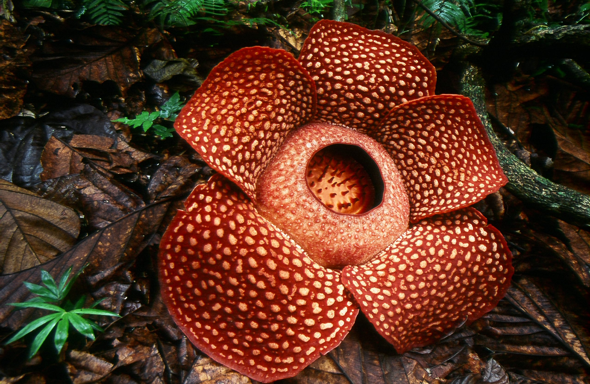
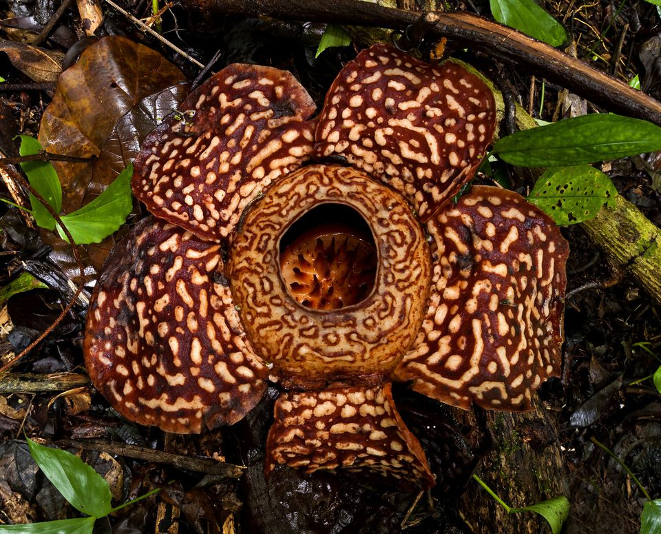

In Sabah, the Rafflesia can be spotted in conservation areas like the Rafflesia Information Centre in Tambunan, and sometimes in the forests near Kundasang or Poring Hot Springs. However, seeing one in bloom is rare, as each flower takes months to grow but only blooms for 3 to 5 days before it starts to rot. When it blooms, it emits a strong odor similar to rotting meat, earning it the nickname “corpse flower.” This scent attracts flies and other insects which help pollinate the plant.
